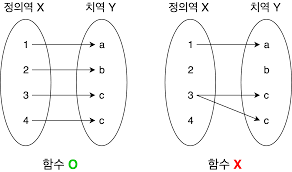
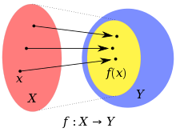

미적분학은 물리학 현상(자유낙하운동 등), 생물학(박테리아 증식 방정식, 생물 군집 특성 분석 등), 사회학 등 많은 분야에서 활용되고 있어 문이과 가리지 않고 모든 대학교의 기본 과목으로 채택될 정도로 아주 중요한 기본과목이다. 나 역시 수학과 출신이기에 신입생 때 미적분학을 수강하고 재밌게 들었던 기억이 있다. 하지만, 신입생 이후 직접적으로 미적분학을 사용할 일이 없다가 대학원에 입학하니 미적분학에 대한 기초를 다시 잡아야할 거 같았기 때문에 포스팅으로 정리하고자 한다.
오늘은 미적분학 카테고리에서 가장 처음 업로드하는 포스팅이기 때문에 가장 기본적인 함수에 대해서 알아보자. 사실 “함수”라는 주제 하나 만으로 두꺼운 책 한권을 낼 수 있을 정도로 넓은 주제이지만 모든 범위를 다루기에는 내 지식도 얕고 흥미도 잃을 것 같으니 기본적인 주제만 정리해보도록 하자.
1. Introduction
먼저, 함수가 무엇인지부터 생각해보자. 함수… 중학교 때 배운 개념을 토대로 생각해보면 아마 아래와 같은 그림을 떠올릴 것이다.(아래의 그림은 구글 이미지에서 함수를 검색해서 얻은 이미지이다.)

위의 그림에서 왼쪽에는 함수이고 오른쪽에는 함수가 아니란다… 이유가 뭘까? 일단 왼쪽 그림이든 오른쪽 그림이든 공통적인 것은 “정의역”과 “치역”이라는 것이 있다. 그리고 화살표로 항상 정의역에서 치역으로의 관계를 표현해준다. 여기서의 화살표가 바로 함수이다!! 즉, 화살표는 정의역에서 치역 사이의 관계를 정의하는 한 가지 규칙이라고 볼 수 있다.
하지만 단순히 화살표만 찍찍 긋는다고 해서 함수가 되는 것은 아니다. 어느정도 규칙이라는 것이 존재해야하는 데 딱 2가지만 고려해보자. 첫번째 규칙은 정의역은 모든 값은 치역 사이의 관계가 존재해야한다. 두번째 규칙은 1개의 정의역이 여러 개의 치역과 관계를 맺어서는 안된다. 따라서 오른쪽 그림은 첫번째 조건과 두번쨰 조검 모두 만족하지 않기 때문에 함수라고 부를 수 없다. 이번에는 더 정확한 정의를 보도록 하자.
2. Function Definition
함수 $f$는 집합 $D$의 각 원소 $x$가 정확히 집합 $E$의 1개의 원소 $f(x)$에 대응되는 규칙이다.
- 정의역(Domain) $D = \text{dom}(f)$ : 함수 $f$의 모든 입력값의 집합
- 공역(Codomain) $E$ : 함수 $f$의 모든 가능한 출력값의 집합
- 치역(Range) $R \subseteq E$ : 함수 $f$의 정의역 $D$가 $f$에 의해 대응되는 모든 원소 $f(x)$의 집합
- 독립변수(Independent Variable) : 정의역 $D$의 임의의 원소
- 종속변수(Dependent Variable) : 치역 $R$의 임의의 원소
위 용어들은 앞으로 미적분학 뿐만 아니라 모든 수학 분야에 걸쳐서 나오기 때문에 꼭 숙지하는 것이 편하다. 여기서 한 가지 집고 넘어갈 것은 치역과 공역의 차이이다. 기본적으로 두 용어는 비슷해보이지만 다르다. 일단, 항상 공역이 치역보다 크거나 같다.

위 그림을 보도록 하자. 모든 정의역이 항상 모든 공역으로 관계가 지어지지 않는다. 실질적으로 정의역이 공역으로 매핑될 때는 공역보다 작은 집합으로 될 것 인데, 이 영역을 치역이라고 하자는 것이다.
3. Even Function? Odd Function?
Even과 Odd는 각각 짝과 홀을 의미한다. 그렇다면 Even Function은 짝함수, Odd Function은 홀함수라는 건데… 직관적으로 와닿지 않는다. 사실 짝함수, 홀함수라고 부르지는 않고 각각 우함수, 기함수라고 부른다. 비유없이 바로 들어가면 우함수는 $y$ 축에 대칭인 함수들, 기함수는 원점 $(0, 0)$에 대칭인 함수를 의미한다.
먼저, $y$ 축에 대칭인 함수들이 무엇이 있을까? 아마 현재 이 포스팅을 보고 있는 대부분이 생각하는 함수는 $f(x) = x^{2}$ 일 것이다. 아주 단순하고 깔끔한 정답이다. 그렇다면 $x^{4}, x^{6}$는 어떤가? 이 함수들 역시 우함수이다. 따라서 우리는 $k$가 1이상의 자연수일 때 $f(x) = x^{2k}$는 함상 우함수라는 것을 알아낸 것이다.
이번에는 $(0, 0)$에 대칭인 함수들을 생각해보자. 가장 간단한 함수는 $f(x) = x$인데, 이 역시 정답이지만 지수가 홀수인 모든 함수 $f(x) = x^{2k - 1}$($k$는 1이상의 자연수)는 기함수이다.
이제, 단항식에 대한 우함수-기함수 판별법은 쉽게 할 수 있을 거 같다. 그렇다면 $f(x) = x^{5} + x$와 같은 다항식에서는 어떨까? 방법은 간단하다. 만약, $f(x)$가 우함수라고 가정해보자. 그러면 $y$ 축으로 대칭이기 때문에 $f(-x) = f(x)$를 만족해야한다. 기함수의 경우에는 $y$ 축으로 대칭을 시킨 뒤 $x$ 축으로 한번 더 시킨것과 동일하다. 따라서 $f(-x) = -f(x)$를 만족해야한다.
간단한 예로 $f(x) = x^{5} + x$를 생각해보자. $f(-x) = -x^{5} - x = -f(x)$이기 때문에 $f(x)$는 기함수이다.
4. Increasing Function? Decreasing Function?
이 함수들의 정의는 간단하다. 함수의 정의역에서 항상 증가하거나 감소하는 것을 의미한다.
- 함수 $f$가 구간 $I$의 $x_{1}, x_{2} \in I$에 대해서 $f(x_{1}) < f(x_{2})$가 성립하면 $f$는 증가함수이다.
- 함수 $f$가 구간 $I$의 $x_{1}, x_{2} \in I$에 대해서 $f(x_{1}) > f(x_{2})$가 성립하면 $f$는 감소함수이다.